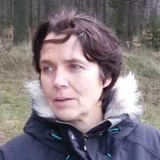

Presentation
Charlotta Bentzen

heter jag och här nedan berättar jag lite om mig själv
Jag bor
i ett gammalt missonshus utanför en by som heter Normlösa några kilometer utanför Mantorp. Har två vuxna grabbar som är utflugna
Jag gillar
- Mina hundar
- Kajsa, 14-årig Lancashire Heeler tik, 6kg, den som bestämmer
- Klara 9-årig Lancashire Heeler tik, dotter till Kajsa, 8,5 kg
- Ylva 2-årig Sankt Bernhardstik, 55 kg, har inget att säga till om
- Svamp, plocka, äta, färga med
De godaste att äta är- Karl Johan
- Sandsopp
- Rödgul trumpetsvamp
- Bra färgsvampar är exempelvis
- Rödskivig spindling, en skivling som ger röda färger
- Grovticka, en ticka som ger gula färger
- Grönköttig spindling, en skivling som ger gula färger
- Slöjd och hantverk Intresserad av det mesta men utövar mest textilt hantverk. Bra på att sticka.
Sidor jag brukar besöka
Jag jobbar
som ambulanssyrra och har, förutom sjuksköterskeutbildning, vidareutbildning i anestesi och intensivvård. Stortrivs med arbetet men skulle absolut inte kunna tänka mig att arbeta på sjukhus igen så efter en knäskada, som turligt nog läkte ut, bestämde jag mig för att utbilda mig på nytt ifall jag inte skulle kunna fortsätta jobba i ambulans.
Det mesta i utbildningen är nytt för mig och jag har aldrig kodat tidigare.